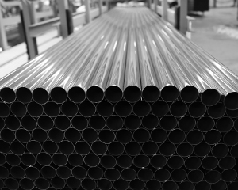
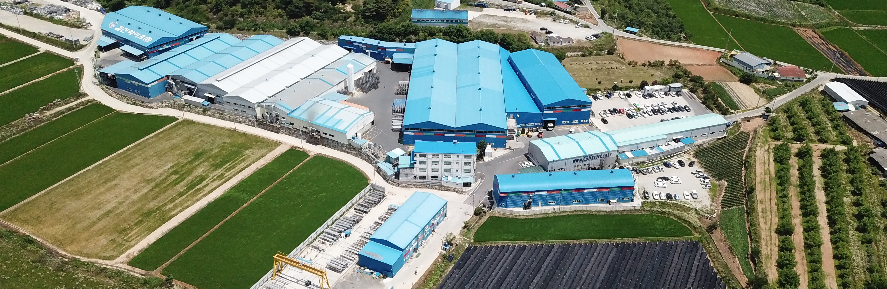
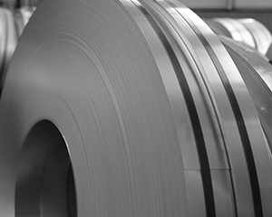
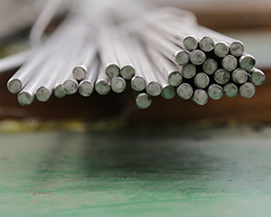
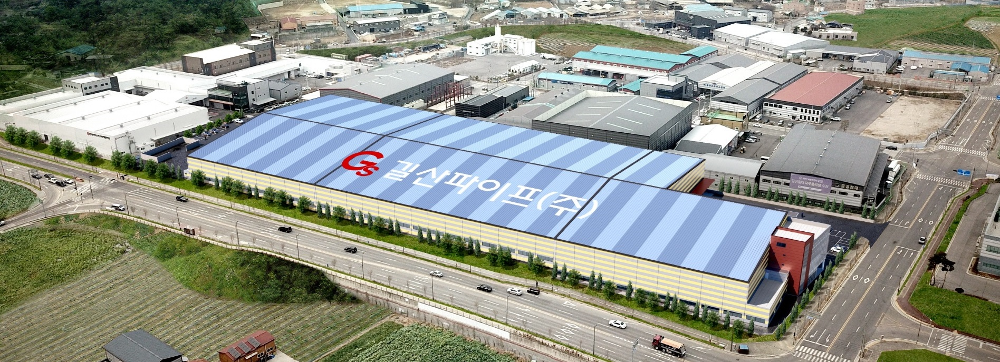

GILSAN MATERIAL LIBRARY / 01

STAINLESS STEEL PIPESTRUCTURAL PIPE
구조를 세우는 기본.
원형과 사각형, 필요한 형상으로.
기계구조용 스테인리스 강관을 확인해 보세요.

THE STRENGTH THAT CONNECTS INDUSTRY
소재에서 시작해, 더 큰 가능성으로.
스테인리스 강관의 생산부터 다양한 철강 제품의 공급까지.
눈에 보이는 구조물부터 보이지 않는 부품까지.
우리의 일상과 산업을 지탱하는 곳에 스테인리스가 있습니다.
길산파이프는 1991년 길산정밀로 시작해 스테인리스 강관을 생산해 왔습니다. 구조관과 각관, 판재와 코일, 다양한 봉강 제품으로 고객의 다음 작업을 함께합니다.
길산을 더 알아보기THE SHAPE OF POSSIBILITY
스테인리스의 쓰임은
형태를 만들어가는 기술에서 시작됩니다.
가공을 기다리는 한 장의 소재.
다음 형태를 위한 출발점입니다.
형상과 용도에 맞는 제품을 살펴보세요.
상세 규격과 공급 조건은 상담으로 확인하실 수 있습니다.

STAINLESS STEEL PIPESTRUCTURAL PIPE
원형과 사각형, 필요한 형상으로.
기계구조용 스테인리스 강관을 확인해 보세요.
STAINLESS PIPING
사용 환경과 요구 규격에 맞는 배관용 강관.
강종·치수·수량을 정리해 상담해 보세요.

STAINLESS SHEET & COILSHEET & COIL
판재부터 코일까지, 다음 가공의 출발점.
필요한 강종과 표면 상태를 확인해 보세요.

BAR & SECTIONBAR & SECTION
환봉, 평철, 앵글, 각봉까지.
작업에 필요한 형태의 철강 제품을 살펴보세요.

슬리팅, 조관, 연마, 각관 성형.
길산은 소재가 제품이 되는 과정을 다룹니다.
실제 작업 공정과 공급 가능 사양은 제품별로 확인해 주세요.
KS 인증기관협의회 2026.11.08 조회 기준. 인증 적용 범위는 원문에서 확인하실 수 있습니다.
길산정밀 설립스테인리스 강관을 향한 첫걸음
한국 산업 규격(KS) 표시 허가 획득기계구조용 스테인리스 강관
길산파이프로 사명 변경길산정밀㈜에서 길산파이프㈜로
논산공장 증축 준공생산 기반의 확장
찾으시는 제품과 규격을 알려주세요.
제품 정보는 살펴보고, 구매 조건은 상담으로 확인하세요.